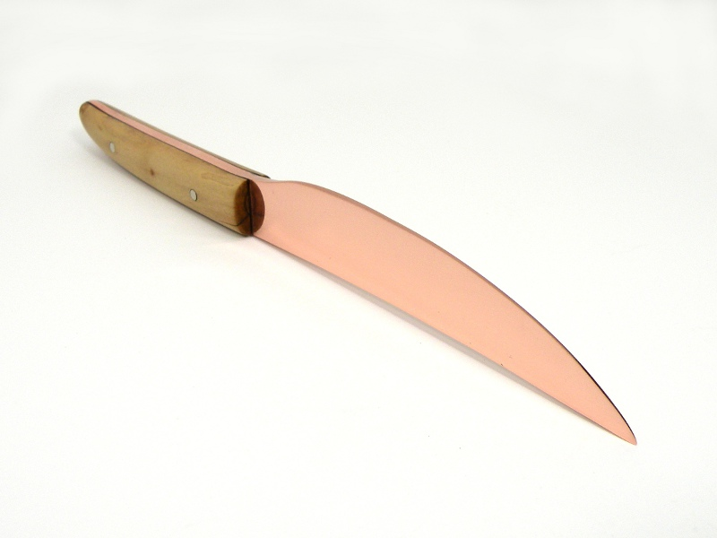
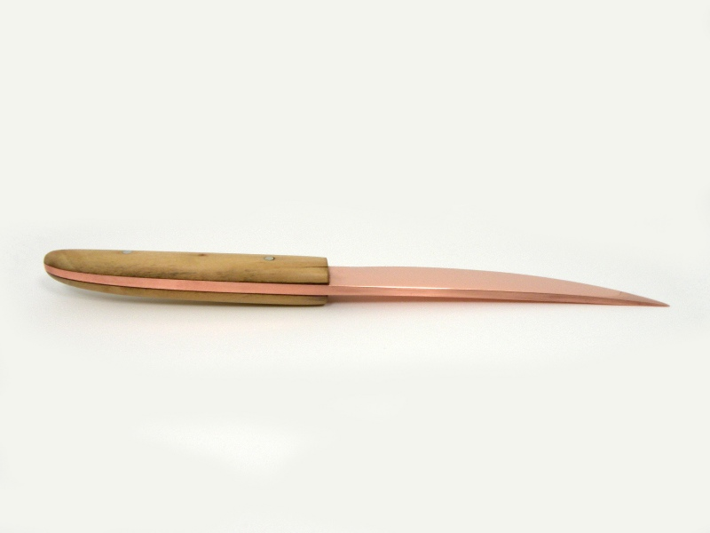

Copper Knife Copper Knife
Copper Knife Copper KnifeFor a period of around two-and-a-half millenia the chief metal used in the manufacture of tools and weapons in Europe was bronze, an alloy of copper and tin. Depending upon the percentage of alloying elements, bronze can be very hard and tough, making good knives, swords, and axes. Even today, tools used for disarming bombs are often made of bronze because, unlike steel, it is not magnetic and does not spark.
Pure copper on the other hand is very soft, and can only be hardened by work-hardneing, that is, by disturbing the metal through bending or hammering. Many years ago, I decided to find out if pure copper could make a usable knife.
The blade of the knife was formed from an electrical bus bar by a combination of annealing and cold-forging, then ground and polished to the finished dimensions. The handle is made from the same applewood as my shillelagh, epoxied to the tang, and has nickle-silver pins providing further security. While made many years apart, the shillelagh and knife are almost companion pieces.
My attempts to sharpen the copper blade proved frustrating. When sharpening a knife, one must be aware of the burr formed on the side of the edge opposite the side being honed. The force of the sharpening stone will roll up an imperceptible curl of metal, which must be removed or the edge will cut poorly and become easily damaged. That is why a sharpening technique is usually employed which alternates sides, with lighter strokes used as the edge nears the desired sharpness. On the very finest and sharpest of blades, such as straight razors, the resulting microscopic burr is then drawn out by stropping so that the cutting edge is so thin as to be damaged even by testing with the thumb.
Getting a good edge on softer steels can be frustrating because every pass at the stone which aims to cut the burr raises an equal burr on the opposite side. A very light touch must be used to achieve a good edge on cheap, soft steels. Imagine, then, how much more difficult is sharpening a metal as soft as copper. Only through persistence and painstaking care was I able to produce a cutting edge on this knife, which then dulled quickly.
The result of the experiment then, is that while pure copper can make a useable knife blade, it makes a very poor one. Were my choices between a copper knife and no knife at all, however, the choice is obvious. Useful or not, the knife is still very attractive.
Created by Sean Corron, April 2, 2011.